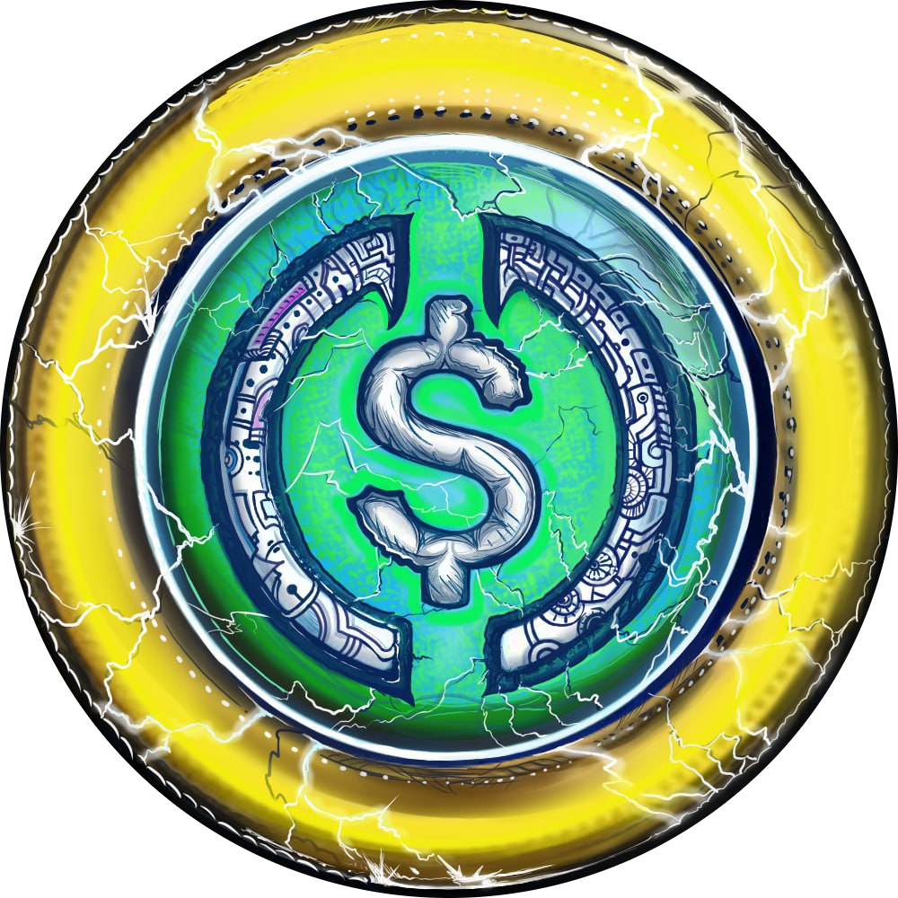

p2p_user
Данное Mini App дополняет нашего бота, из которого вы сюда попали. Когда мы только создавали бота, у нас была цель собрать всю самую главную и необходимую информацию в одном месте, однако как выяснилось чем больше исходного кода, тем ниже быстродействие. Поэтому мы решили всю главную текстовую информацию расположить тут.
▼Кто мы?
Обменник не используйющий для обменов сильно рискованные криптовалюты по типу USDT, BNB, SOL, TRX и т.п., создатели которых короли отмыва, понцы-схем, минипулирования и которых скорее всего за это скоро посадят в тюрьму.
▼Почему p2p_user?
В самом начале, 22 сентября 2023 года мы начали свой путь с p2p на Bybit, обменивая USDC и в планах не было делать полноценный обменник, но как видите, мы всё таки решили его сделать, но название на тот момент уже как то нам прижилось, да и идей для нового не было и нет. Однако мы держим в голове идею ребрендинга.
▼Где можно найти отзывы на нас?
У нас более 400 положительных отзывов на Bybit (для их просмотра надо иметь аккаунт) и не одного отрицательного. Так же есть пару отзывов в нашем открытом чате (в закрепе).